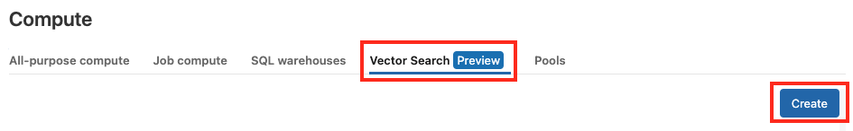
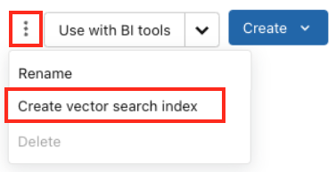

How to create and query a Vector Search index
Preview
This feature is in Public Preview.
This article describes how to create and query a vector search index using Databricks Vector Search.
You can create and manage Vector Search components, like a vector search endpoint and vector search indices, using the UI, Python SDK, and REST API. Databricks recommends using the UI for the simplest experience, but this guide also demonstrates uses of the SDK for reference and querying.
Requirements
Unity Catalog enabled workspace.
Serverless compute enabled in the account console.
CREATE TABLEprivileges on catalog schema(s) to create indexes.If you prefer to use the SDK, be sure to install it in your notebook.
%pip install databricks-vectorsearch dbutils.library.restartPython()
Create a Vector Search endpoint
You can create a vector search endpoint for Vector Search using the UI.
Click Compute on the left sidebar to open the Compute UI.
Click the Vector Search tab and click Create.
The Create endpoint form opens. Enter a name for this endpoint.
Click Confirm.
If you prefer to use the SDK, you can use the following to create a Vector Search endpoint:
client = VectorSearchClient()
client.create_endpoint(
name="vector_search_endpoint_name",
endpoint_type="STANDARD"
)
Configure a model serving endpoint
The guidance in this section only applies when you plan to create a vector search index where Databricks automatically computes the embedding vectors for you. If you already have your embeddings in a Delta table or plan to compute embedding vectors yourself, you can skip to Create a vector search index.
In order to have Vector Search compute embeddings, you need to configure a Model Serving endpoint for embeddings generation. See the notebooks in the Call an embedding model notebook examples section for examples of configuring a model serving endpoint for serving your embeddings model of choice.
Databricks recommends configuring a model serving endpoint for Vector Search that does not scale down to zero. Because serving endpoints can take a couple of minutes to warm up, an initial query on an index with a scaled down endpoint results in a timeout while the endpoint is warming up.
Create a vector search index
You can create a vector search index using the UI. The following steps show how to create a Delta Sync Index that automatically updates when the source Delta table changes. See Vector search index.
Click Catalog on the left sidebar to open the Catalog Explorer UI.
Select the Delta table you want to use.
Select Create vector search index from the kebab menu on the top right.
Populate the Create vector index form.
Provide a name for your index. The name requires a three-level namespace,
<catalog>.<schema>.<name>, that only allows alphanumeric and underscores.Select which column to use as your primary key.
Select the model serving endpoint that is serving the embeddings model you want to use.
Select Compute embeddings, so Databricks can compute embeddings for you.
If you already have a Delta table with computed embeddings, select Use existing embedding column.
Select an Embedding source column. For Databricks-computed embeddings, only text is supported.
If you chose Use existing embedding column, this field changes to Embedding vector column where any data types are supported.
Select which Embedding model to use.
Select Continuous as the sync mode. The
continuousmode keeps the index in sync with seconds of latency. However, it has a higher cost associated with it since a compute cluster is provisioned to run the continuous sync streaming pipeline.
Click Create.
If you prefer to use the SDK, you can use the following. This example creates a Delta Sync index with embeddings computed by Databricks.
index = client.create_delta_sync_index(
endpoint_name="vector_search_demo_endpoint",
source_table_name="vector_search_demo.vector_search.en_wiki",
index_name="vector_search_demo.vector_search.en_wiki_index",
pipeline_type='TRIGGERED',
primary_key="id",
embedding_source_column="text",
embedding_model_endpoint_name="e5-small-v2"
)
You can only create a Direct Vector Access Index using the SDK.
client = VectorSearchClient()
index = client.create_direct_access_index(
endpoint_name="storage_endpoint",
index_name="{catalog_name}.{schema_name}.{index_name}",
primary_key="id",
embedding_dimension=1024,
embedding_vector_column="text_vector",
schema={
"id": "int",
"field2": "str",
"field3": "float",
"text_vector": "array<float>"}
)
Query a Vector Search endpoint
You can only query the Vector Search endpoint using the SDK. The following example uses the Delta Sync Index created in the previous section.
results = index.similarity_search(
query_text="Greek myths",
columns=["id", "text"],
num_results=2
)
results
Example notebooks
The examples in this section demonstrate usage of the Vector Search Python SDK.
LangChain examples
See How to use LangChain with Databricks Vector Search for using Databricks Vector Search as in integration with LangChain packages.
The following notebook shows how to convert your similarity search results to LangChain documents.